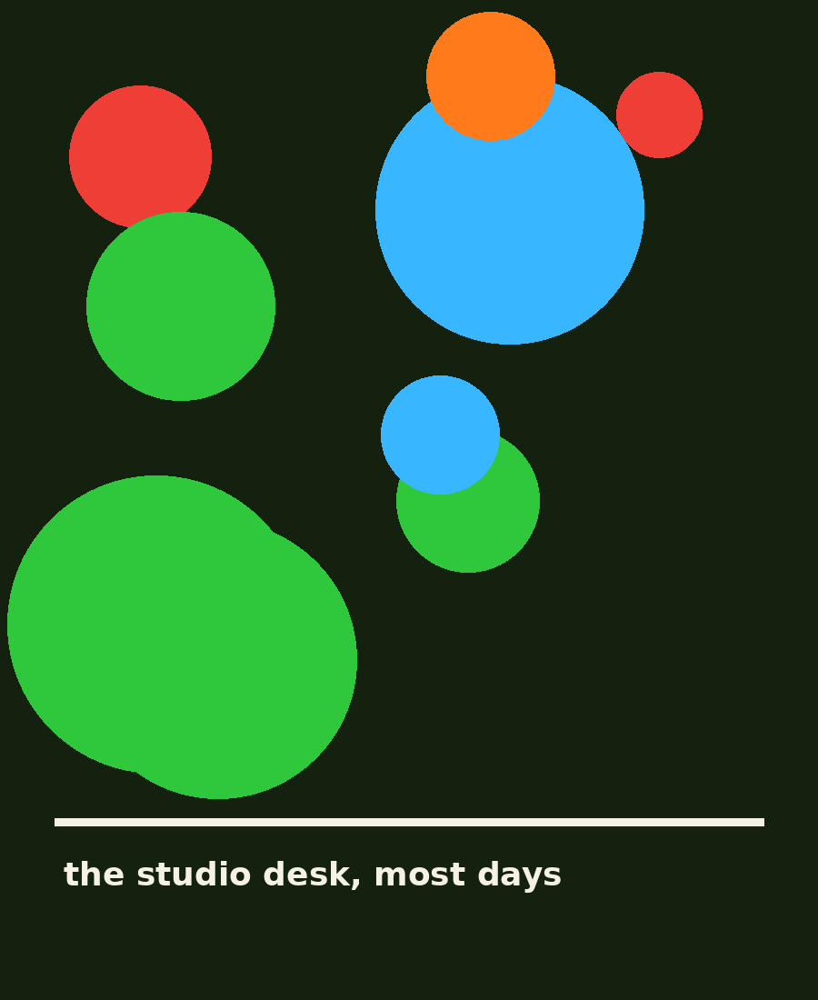

About
Quieter page on purpose. The work shouts so I don't have to.
Hi, I'm Lena.
I arrange visual noise into arguments that work.
Graphic designer based in Rotterdam, working with cultural organisations, small brands and people with something to say.
I came to design through screen-printing posters for friends' bands, which explains a lot: a love of ink, a tolerance for misregistration, and the belief that a layout should feel slightly alive — like it could keep growing if you left the room.
These days I work across posters, social media campaigns and print publications. Editorial and magazine design are the next frontier; the first specimen sheets are already on the wall.
When I'm not working, I'm at the market drawing type on fruit crates, or losing arguments about kerning with my cat.

How I work
-
Listen for the loud part
Every brief has one idea that matters most. I find it before opening any software — usually in a conversation, occasionally in a nap.
-
Make it worse on purpose
First drafts are deliberately excessive. Oversized type, too many colours, grids bent past comfort. Editing back is where the design lives.
-
Test at real size
Posters get taped to walls, feeds get checked on an actual phone outdoors, print gets proofed on the intended stock. Screens lie; walls don't.
-
Leave one strange thing
Every finished piece keeps one deliberate imperfection — a rotated label, an odd crop, one colour that shouldn't work but does. That's the signature.